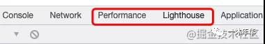
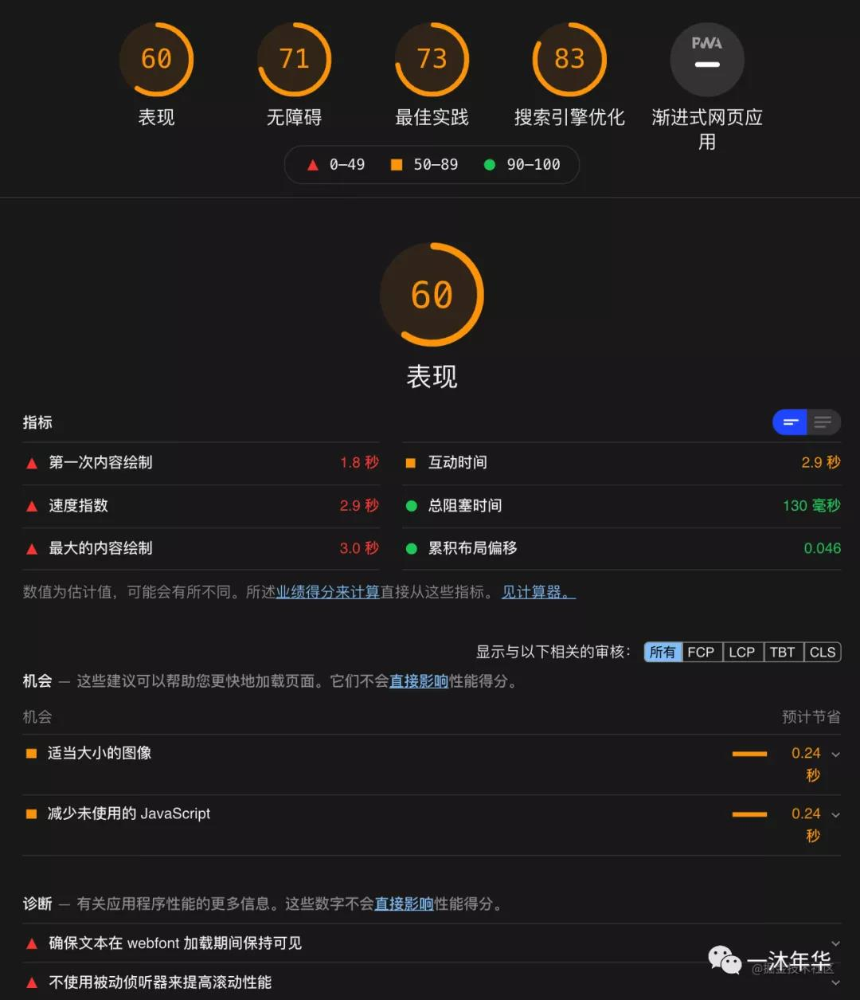
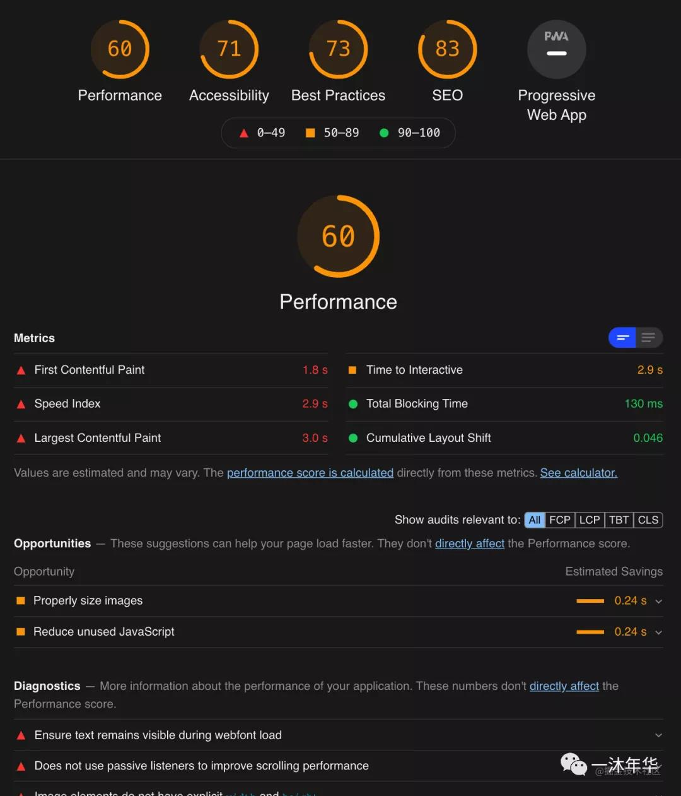
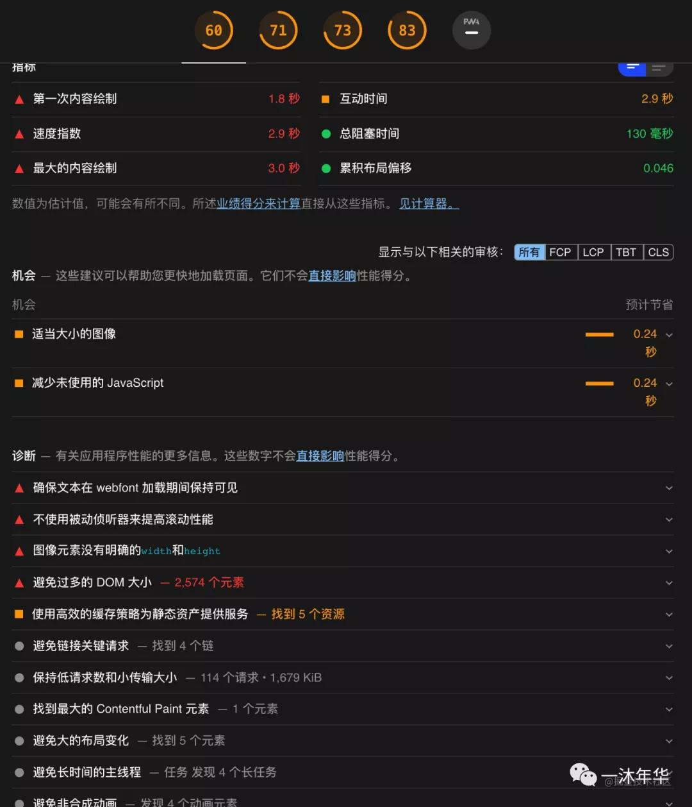
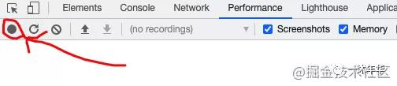
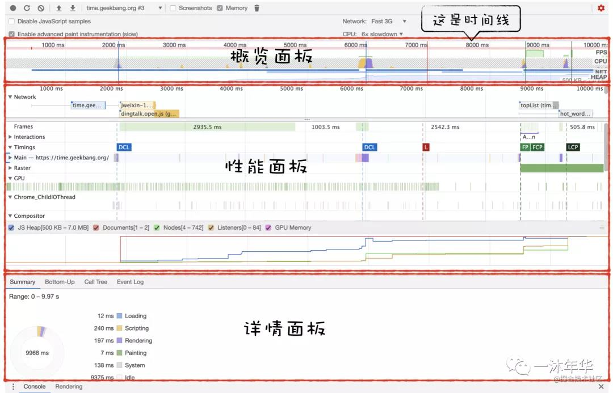
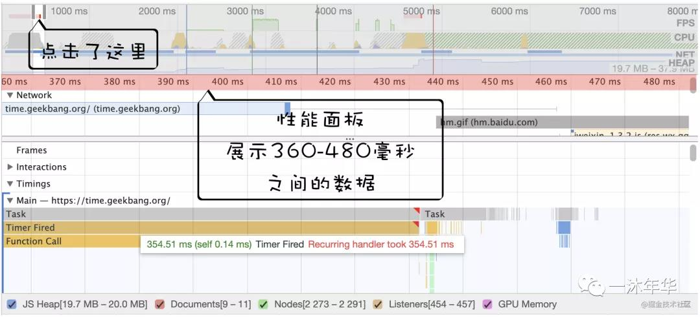
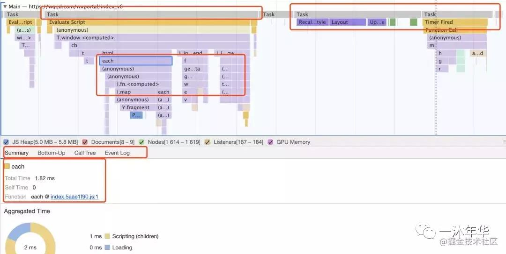
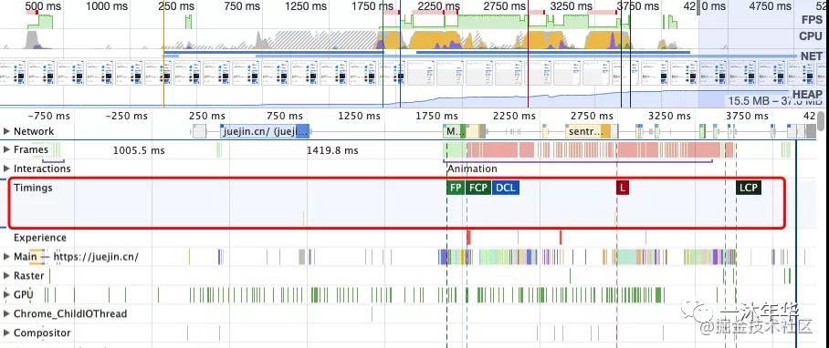

性能优化面试官想听的是什么？别再说那些老掉牙的性能优化了
这性能优化呢，它是一个特别大的方向，因为每个项目可能优化的点都不一样，每一种框架或者每一种客户端可以优化的点也都不一样
总的来说，现在B/S架构下都是前端向后端请求，后端整理好数据给客户端返回，然后客户端再进行数据处理、到渲染将界面展示出来，
这么一个大致流程
那我们优化就是要基于这一过程，说白了我们能够优化的点，就只有两个大的方向
一是更快的网络通信，就是客户端和服务端之间，请求或响应时 数据在路上的时间让它更快
二是更快的数据处理，指的是
服务器接到请求之后，更快的整理出客户端需要的数据
客户端收到响应的数据后，更快的给用户展示 以及 交互时更快的处理
然后！开始blablabla.....
更快网络通信方面比如：CDN做全局负载均衡、CDN缓存、域名分片、资源合并、雪碧图、字体图标、http缓存，以减少请求；
还有gzip/br压缩、代码压缩、减少头信息、减少Cookie、使用http2、用jpg/webp、去除元数据等等，blablabla.....
`
更快数据处理方面比如：SSR、SSG、预解析、懒加载、按需引入、按需加载、CSS放上面、JS放下面、语义化标签、动画能用CSS就不用JS、
事件委托、减少重排、等等代码优化，blablabla.....
请直接把上面的总结成一句话 给面试官
请求优化、代码优化、打包优化都是常规操作，像雅虎34条军规，都知道的事就不用说了
因为每个项目优化的点可能都不一样，所以优化主要 还是根据自己的项目来
要么跟人家聊一下框架优化，深入原理也很不错
具体要优化什么主要还是看浏览器(Chrome为例)开发者工具里的 Lighthouse 和 Performance

Lighthouse 是生成性能分析报告。可以看到每一项的数据和评分和建议优化的点，比如哪里图片过大
Performance 是运行时数据，可以看到更多细节数据。比如阻塞啊，重排重绘啊，都会体现出来，够不够细节
然后再去根据这些报告和性能指标体现出来的情况，有针对性的去不断优化我们的项目
Lighthouse
直接在Chrome开发者工具中打开
或者 Node 12.x或以上的版本可以直接安装在本地
npm install -g lighthouse
安装好后，比如生成掘金的性能分析报告，一句代码就够了，然后就会生成一个html文件
lighthouse https://juejin.cn/
不管是浏览器还是安装本地的，生成好的报告都是长的一模一样的，一个英文的html文件，翻译了一张给大家看看，如图

如图，分析报告内容一共五个大项，每一项满分100分，然后下面是再把每项分别展开说明
还是看一下英文版吧，一个程序员必须要养成这个习惯

如图，五项分别是：
Performance：这个又分为三块性能指标、可优化的项、和手动诊断
Accessibility：无障碍功能分析。比如前景色和背景色没有足够对比度、图片有没有alt属性、a链接有没有可识别名称等等
Best Practices：最佳实践策略。比如图片纵横比不正确，控制台有没有报错信息等
SEO：有没有SEO搜索引擎优化的一些东西
PWA：官方说法是衡量站点是否快速、可靠和可安装。在国内浏览器内核不统一，小程序又这么火，所以好像没什么落地的场景
然后我们知道了这么多信息，是不是就可以对我们的项目诊断和针对性的优化了呢
是不是很棒

Performance
如果说 Lighthouse 是开胃菜，那 Performance 就是正餐了
它记录了网站运行过程中性能数据。我们回放整个页面执行过程的话，就可以定位和诊断每个时间段内页面运行情况，
不过它没有性能评分，也没有优化建议，只是将采集到的数据按时间线的方式展现
打开 Performance，勾选 Memory，点击左边的 Record 开始录制，然后执行操作或者刷新页面，
然后再点一下(Stop)就结束录制，生成数据

如图

概况面板
里面有页面帧速(FPS)、白屏时间、CPU资源消耗、网络加载情况、V8内存使用量(堆)等等，按时间顺序展示。
那么怎么看这个图表找到可能存在问题的地方呢
如果FPS(看图右上角)图表上出现红色块，就表示红色块附近渲染出一帧的时间太长了，就有可能导致卡顿
如果CPU图形占用面积太大，表示CPU使用率高，就可能是因为某个JS占用太多主线程时间，阻塞其他任务执行
如果V8的内存使用量一直在增加，就可能因为某种原因导致内存泄露
一次查看内存占用情况后，看当前内存占用趋势图，走势呈上升趋势，可以认为存在内存泄露
多次查看内存占用情况后截图对比，比较每次内存占用情况，如果呈上升趋势，也可以认为存在内存泄露
通过概览面板定位到可能存在问题的时间节点后，怎么拿到更进一步的数据来分析导致该问题的直接原因呢
就是点击时间线上有问题的地方，然后这一块详细内容就会显示在性能面板中
性能面板
比如我们点击时间线上的某个位置(如红色块)，性能面板就会显示该时间节点内的性能数据，如图

性能面板上会列出很多性能指标的项，比如
Main 指标：是渲染主线程的任务执行记录
Timings 指标：记录如FP、FCP、LCP等产生一些关键时间点的数据信息
Interactions 指标：记录用户交互操作
Network 指标：是页面每个请求所耗时间
Compositor 指标：是合成线程的任务执行记录
GPU 指标：是GPU进程的主线程的任务执行记录
Chrome_ChildIOThread 指标：是IO线程的任务执行记录，里面有用户输入事件，网络事件，设备相关等事件
Frames 指标：记录每一帧的时间、图层构造等信息
Main 指标
性能指标项有很多，而我们使用的时候多数时间都是分析Main指标，如图

上面第一行灰色的，写着 Task 的，一个 Task 就是一个任务
下面黄色紫色的都是啥呢，那是一个任务里面的子任务
我们放大，举个例子
 Task 是一个任务，下面的就是 Task 里面的子任务，这个图用代码表示就是
function A(){
A1()
A2()
}
function Task(){
A()
B()
}
Task()
是不是就好理解得多了
所以我们就可以选中标红的 Task ，然后放大(滑动鼠标就可放大)，看里面具体的耗时点
比如都做了哪些操作，哪些函数耗时了多少，代码有压缩的话看到的就是压缩后的函数名。然后我们点击一下某个函数，
在面板最下面，就会出现代码的信息，是哪个函数，耗时多少，在哪个文件上的第几行等。这样我们就很方便地定位到耗时函数了
还可以横向切换 tab ，看它的调用栈等情况，更方便地找到对应代码
具体大家可以试试～
Task 是一个任务，下面的就是 Task 里面的子任务，这个图用代码表示就是
function A(){
A1()
A2()
}
function Task(){
A()
B()
}
Task()
是不是就好理解得多了
所以我们就可以选中标红的 Task ，然后放大(滑动鼠标就可放大)，看里面具体的耗时点
比如都做了哪些操作，哪些函数耗时了多少，代码有压缩的话看到的就是压缩后的函数名。然后我们点击一下某个函数，
在面板最下面，就会出现代码的信息，是哪个函数，耗时多少，在哪个文件上的第几行等。这样我们就很方便地定位到耗时函数了
还可以横向切换 tab ，看它的调用栈等情况，更方便地找到对应代码
具体大家可以试试～
Timings 指标
Timings 指标也需要注意，如图

它上面的FP、FCP、DCL、L、LCP这些都是个啥呢
别着急
上面说了 Timings 表示一些关键时间点的数据信息，那么表示哪些时间呢，怎么表示的呢？
FP：表示首次绘制。记录页面第一次绘制像素的时间
FCP：表示首次内容绘制（只有文本、图片(包括背景图)、非白色的canvas或SVG时才被算作FCP）
LCP：最大内容绘制，是代表页面的速度指标。记录视口内最大元素绘制时间，这个会随着页面渲染变化而变化
FID：首次输入延迟，代表页面交互体验的指标。记录FCP和TTI之间用户首次交互的时间到浏览器实际能够回应这种互动的时间
CLS：累计位移偏移，代表页面稳定的指标。记录页面非预期的位移，比如渲染过程中插入一张图片或者点击按钮动态插入一段内容等，
这时候就会触发位移
TTI：首次可交互时间。指在视觉上已经渲染了，完全可以响应用户的输入了。是衡量应用加载所需时间并能够快速响应用户交互的指标。
与FMP一样，很难规范化适用于所有网页的TTI指标定义
DCL: 表示HTML加载完成时间
注意：DCL和L表示的时间在 Performance 和 NetWork 中是不同的，因为 Performance 的起点是点击录制的时间，
Network中起点时间是 fetchStart 时间(检查缓存之前，浏览器准备好使用http请求页面文档的时间)
L：表示页面所有资源加载完成时间
TBT：阻塞总时间。记录FCP到TTI之间所有长任务的阻塞时间总和
FPS：每秒帧率。表示每秒钟画面更新次数，现在大多数设备是60帧/秒
FMP：首次有意义的绘制。是页面主要内容出现在屏幕上的时间，这是用户感知加载体验的主要指标。有点抽象，
因为目前没有标准化的定义。因为很难用通用的方式来确定各种类型的页面的关键内容
FCI：首次CPU空闲时间。表示网页已经满足了最小程度的与用户发生交互行为的时间
然后根据指标体现出来的问题，有针对性的优化即可